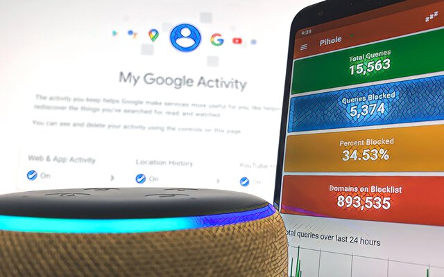

Research Areas
User Authentication
- Passwordless Authentication
- Password Security
- Security Warnings & Notifications
- Mobile Authentication
- Fallback Authentication
- Risk-Based Authentication
- Alternative Schemes
- Crypto & Authentication
- Enterprise & Access Control
Usable Privacy

- Online Behavioral Advertising
- Disruptive Technologies
Community Service, Committees, and Reviewing Activities
Below you can find a list of recenty reviewing activities and other work in scientific committees.
Last update: July 2025
- Program Committee: 35th USENIX Security Symposium (SSYM '26)
- Program Committee: 21st Symposium on Usable Privacy and Security (SOUPS '25)
- Reviewer: Symposium on Usable Security and Privacy (USEC '25)
- Associate Chair: ACM Conference on Human Factors in Computing Systems (CHI '25)
- Program Committee: 20th Symposium on Usable Privacy and Security (SOUPS '24)
- Reviewer: ACM Conference on Human Factors in Computing Systems (CHI '24)
- Reviewer: ACM Transactions on Computer-Human Interaction (TOCHI '23)
- Program Committee: 19th Symposium on Usable Privacy and Security (SOUPS '23)
- Reviewer: ACM Conference on Human Factors in Computing Systems (CHI '23)
- Reviewer: ACM Conference on Human Factors in Computing Systems (CHI '22)
- Reviewer: ACM Transactions on Privacy and Security (TOPS '21)
- Reviewer: IEEE Transactions on Information Forensics and Security (TIFS '21)
- Program Committee and Poster Chair: 17th Symposium on Usable Privacy and Security (SOUPS '21)
- External Reviewer: 42nd IEEE Symposium on Security and Privacy (SP '21)
- Reviewer: 16th International Conference on Wirtschaftsinformatik (WI '21)
- Reviewer: IEEE Transactions on Emerging Topics in Computing (TETC '20)
- Program Chair: 6th Who Are You?! Adventures in Authentication Workshop (WAY '20)
- Program Committee and Poster Chair: 16th Symposium on Usable Privacy and Security (SOUPS '20)
- Publicity Chair: 5th European Workshop on Usable Security (EuroUSEC '20)
- Reviewer: ACM Transactions on Privacy and Security (TOPS '20)
- External Reviewer: 29th USENIX Security Symposium (SSYM '20)
- Poster Jury: 15th Symposium on Usable Privacy and Security (SOUPS '19)
- Program Chair: 5th Who Are You?! Adventures in Authentication Workshop (WAY '19)
- Program Committee and Publicity Chair: 4th European Workshop on Usable Security (EuroUSEC '19)
- Program Committee: 4th Who Are You?! Adventures in Authentication Workshop (WAY '18)
- Reviewer: 39th International Conference on Information Systems (ICIS '18)
- Program Committee: 2018 Networked Privacy Workshop at ACM CHI (NPW '18)
- External Reviewer: 3rd Who Are You?! Adventures in Authentication Workshop (WAY '17)
- External Reviewer: 26th USENIX Security Symposium (SSYM '17)
- Reviewer: ACM Transactions on Privacy and Security (TOPS '17)
- Reviewer: 11th International Conference on Passwords (PASSWORDS '16)
Education
- Doctorate (Dr.-Ing.) — With Highest Honors
- Master of Science (M.Sc., Engineer) — Very Good
- IT Security - Network & Systems
- «Graphical Fallback Authentication»
- Ruhr University Bochum
- Bachelor of Engineering (B.Eng., Engineer) — Good
- Computer Science - Communication in Distributed Systems
- «Security Audit of a Web Interface for Building Automation»
- University of Applied Sciences Würzburg-Schweinfurt